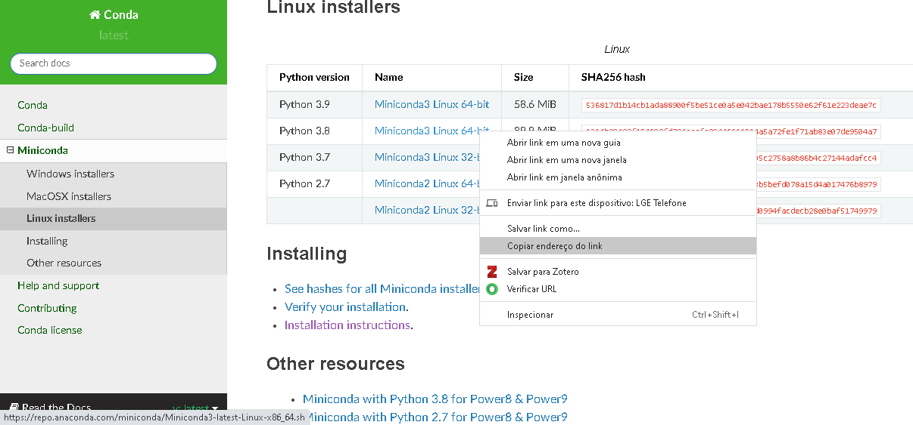

Server configuration¶
Install Miniconda and Python libraries¶
Python libraries installed in HPC are outdated and you may want to use newer releases. This section shows how to install Miniconda in the user’s home directory, without affecting the original installation.
Miniconda installs the most recent release of Python and pip in the user’s folder. The libraries installed with pip and conda are also installed in your folder.
All commands shall be executed in the server’s Linux terminal.
Check CUDA release¶
Before installing the libraries, you need the current CUDA release to choose the right package. Run this command:
$ nvcc --version
nvcc: NVIDIA (R) Cuda compiler driver
Copyright (c) 2005-2019 NVIDIA Corporation
Built on Wed_Apr_24_19:10:27_PDT_2019
Cuda compilation tools, release 10.1, V10.1.168
The output shows the current release is 10.1.
Install Miniconda¶
Miniconda is a package management system for Python and provides pip, conda and the most recent Python release with basic libraries. Miniconda requires less disk space than Anaconda and is faster to install. After installing Miniconda, you may install just the libraries that you’ll use. Anaconda installs many packages and applications that won’t be used.
Select a Miniconda release with the Python version compatible with the libraries that you need, since not all libraries are compatible with the newest release of Python. For example, the latest release of Tensorflow doesn’t work with the latest release of Python and CUDA 10.1.
Warning
Check Python, CUDA and libraries compatibility before installing Miniconda. Many libraries only work with specific Python and CUDA versions.
Access Miniconda website and copy the link with the installation script that you need. This example uses release 3.8.
Use the wget command to download the script with the link you copied from Miniconda site:
$ wget https://repo.anaconda.com/miniconda/Miniconda3-latest-Linux-x86_64.sh
$ bash Miniconda3-latest-Linux-x86_64.sh
The installation script asks a few questions, just press ENTER to accept the default values and accept the license terms. When prompted to initialize Miniconda, answer “yes”. This creates the default base environment that will be automatically activated when you log into the cluster. All libraries will be installed in this environment.
Do you wish the installer to initialize Miniconda3 by running conda init? [yes|no] [no] >>> yes
Now reload ~/.bashrc to update the environment variables and activate the base environment:
$ source ~/.bashrc
Warning
Make sure to select the right environment before installation and always check Python and libraries after installation.
Install Python libraries for your project. Tensorflow and PyTorch use custom installation which depends on Python and CUDA versions:
$ conda install -c conda-forge numpy pandas matplotlib scikit-learn
Optionally update the libaries for the most recent version. In this example, Miniconda installed scikit-learn version 0.23 and this command upgrades to 0.24
# Update scikit-learn
$ conda upgrade -c conda-forge scikit-learn
Install Tensorflow¶
From Tensorflow website, select the correct version according to Python and CUDA versions. Since we have Python 3.8 and CUDA 10.1, the best Tensorflow version is 2.3:
$ pip install tensorflow==2.3
Install PyTorch¶
Similarly, check PyTorch website to install the correct version:
# Install PyTorch
# 1. Version with GPU to install in lince (CUDA 10.1 - Python 3.8)
$ conda install pytorch torchvision torchaudio cudatoolkit=10.1 -c pytorch
# 2. Version without GPU to install in aguia
$ conda install pytorch torchvision torchaudio cpuonly -c pytorch
Install Dask¶
Dask is a library for parallel and distributed computing. Dask’s schedulers scale to thousand-node clusters and its algorithms have been tested on some of the largest supercomputers in the world. It easily integrates with NumPy, Pandas and scikit-learn:
$ conda install dask distributed
Install RAPIDS¶
The RAPIDS suite of open source software libraries and APIs gives you the ability to execute end-to-end data science and analytics pipelines entirely on GPUs. Use the release selector to get the right installation command:
$ conda install -c rapidsai -c nvidia -c conda-forge rapids-blazing=0.19 python=3.8 cudatoolkit=10.1
Test installation¶
After installing the libraries, run Python and import the libraries to confirm the correct version:
$ cat system_info.py
#!/scratch/<YOUR_NUSP>/miniconda3/bin/python3
import sys
import numpy as np
import pandas as pd
import matplotlib as mpl
import sklearn as sk
print('='*20, 'Software version', '='*20)
print("Python:", sys.version.split('\n')[0])
print("NumPy:", np.__version__)
print("Pandas:", pd.__version__)
print('Matplotlib:', mpl.__version__)
print("Sklearn:", sk.__version__)
Warning
Check Tensorflow, PyTorch and RAPIDS on the processing node, since the login server doesn’t have access to GPU.
Lince login node doesn’t provide GPU access, so you need to connect to a processing node to check Tensorflow, PyTorch and RAPIDS:
$ ssh lince2-001
Once connected in lince2-001, connect to a processing node and make sure that Tensorflow and PyTorch recognize the GPU:
$ python
Python 3.8.5 (default, Sep 4 2020, 07:30:14)
[GCC 7.3.0] :: Anaconda, Inc. on linux
Type "help", "copyright", "credits" or "license" for more information.
Check Tensorflow installation¶
Import Tensorflow:
>>> import tensorflow as tf
2021-05-06 10:09:05.807604: I tensorflow/stream_executor/platform/default/dso_loader.cc:48] Successfully opened dynamic library libcudart.so.10.1
Check Tensorflow version:
>>> tf.__version__
'2.3.0'
Check if Tensorflow can list both GPUs:
>>> tf.config.list_physical_devices()
2021-05-06 10:09:19.154886: I tensorflow/stream_executor/platform/default/dso_loader.cc:48] Successfully opened dynamic library libcuda.so.1
2021-05-06 10:09:19.167369: I tensorflow/core/common_runtime/gpu/gpu_device.cc:1716] Found device 0 with properties:
pciBusID: 0000:05:00.0 name: Tesla K20m computeCapability: 3.5
coreClock: 0.7055GHz coreCount: 13 deviceMemorySize: 4.63GiB deviceMemoryBandwidth: 193.71GiB/s
2021-05-06 10:09:19.168426: I tensorflow/core/common_runtime/gpu/gpu_device.cc:1716] Found device 1 with properties:
pciBusID: 0000:83:00.0 name: Tesla K20m computeCapability: 3.5
coreClock: 0.7055GHz coreCount: 13 deviceMemorySize: 4.63GiB deviceMemoryBandwidth: 193.71GiB/s
2021-05-06 10:09:19.168477: I tensorflow/stream_executor/platform/default/dso_loader.cc:48] Successfully opened dynamic library libcudart.so.10.1
2021-05-06 10:09:19.173624: I tensorflow/stream_executor/platform/default/dso_loader.cc:48] Successfully opened dynamic library libcublas.so.10
2021-05-06 10:09:19.176772: I tensorflow/stream_executor/platform/default/dso_loader.cc:48] Successfully opened dynamic library libcufft.so.10
2021-05-06 10:09:19.177907: I tensorflow/stream_executor/platform/default/dso_loader.cc:48] Successfully opened dynamic library libcurand.so.10
2021-05-06 10:09:19.181156: I tensorflow/stream_executor/platform/default/dso_loader.cc:48] Successfully opened dynamic library libcusolver.so.10
2021-05-06 10:09:19.183197: I tensorflow/stream_executor/platform/default/dso_loader.cc:48] Successfully opened dynamic library libcusparse.so.10
2021-05-06 10:09:19.188812: I tensorflow/stream_executor/platform/default/dso_loader.cc:48] Successfully opened dynamic library libcudnn.so.7
2021-05-06 10:09:19.192994: I tensorflow/core/common_runtime/gpu/gpu_device.cc:1858] Adding visible gpu devices: 0, 1
[PhysicalDevice(name='/physical_device:CPU:0', device_type='CPU'), PhysicalDevice(name='/physical_device:XLA_CPU:0', device_type='XLA_CPU'), PhysicalDevice(name='/physical_device:XLA_GPU:0', device_type='XLA_GPU'), PhysicalDevice(name='/physical_device:XLA_GPU:1', device_type='XLA_GPU'), PhysicalDevice(name='/physical_device:GPU:0', device_type='GPU'), PhysicalDevice(name='/physical_device:GPU:1', device_type='GPU')]
Check PyTorch installation¶
Import PyTorch:
>>> import torch
Check PyTorch version:
>>> torch.__version__
'1.7.0'
>>>
Check the number of GPUs available:
>>> torch.cuda.device_count()
2
Check GPU name:
>>> torch.cuda.get_device_name(torch.cuda.current_device())
'Tesla K20m'
Check RAPIDS installation¶
RAPIDS automatically detects the GPU when you import a library:
>>> import cudf
/scratch/11568881/miniconda3/lib/python3.8/site-packages/cudf/utils/gpu_utils.py:92: UserWarning: You will need a GPU with NVIDIA Pascal™ or newer architecture
Detected GPU 0: Tesla K20m
Detected Compute Capability: 3.5
warnings.warn(
System information¶
You may need the hardware information to choose the right software release. The following commands show the main hardware devices and the Linux release. The commands may be executed directly in the Linux terminal, or you may save in a script and run in SLURM job. Note that PyTorch provides a custom version for each CUDA version:
$ cat system_info.sh
#!/usr/bin/bash
echo ========================
echo SLURM: ID of job allocation
echo ========================
echo $SLURM_JOB_ID # ID of job allocation
echo ========================
echo SLURM: Directory job where was submitted
echo ========================
echo $SLURM_SUBMIT_DIR # Directory job where was submitted
echo ========================
echo SLURM: File containing allocated hostnames
echo ========================
echo $SLURM_JOB_NODELIST # File containing allocated hostnames
echo ========================
echo SLURM: Total number of cores for job
echo ========================
echo $SLURM_NTASKS # Total number of cores for job
echo ========================
echo SLURM: GPU devide ID that assigned to the job to use
echo ========================
echo $CUDA_VISIBLE_DEVICES
echo ========================
echo Hostname
echo ========================
hostname
echo ========================
echo Memory Info \(GB\):
echo ========================
free -g
echo ========================
echo CPU Info:
echo ========================
lscpu
echo ========================
echo Disk space
echo ========================
df -h
echo ========================
echo GPU 1
echo ========================
nvidia-smi
echo ========================
echo GPU 2
echo ========================
lshw -C display
echo ========================
echo CUDA Version
echo ========================
nvcc --version
echo ========================
echo Linux version
echo ========================
cat /etc/os-release
echo ========================
echo PATH
echo ========================
echo $PATH
echo ========================
echo Python
echo ========================
which python
which python3
echo ========================
echo Conda
echo ========================
which conda
conda --version
echo ========================
echo Pip
echo ========================
which pip
pip --version
echo ========================
echo Python Library Versions
echo ========================
python system_info.py